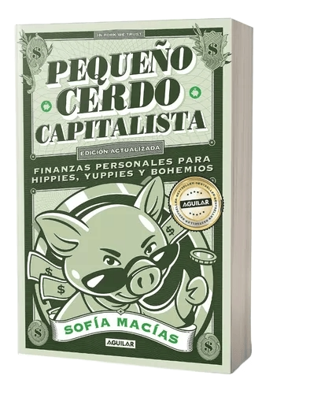

Autor: Sofía Macías
Editorial: Penguin Random House Grupo Editorial SA de CV
Año de publicacion: 1 enero 2020
Mi pequeño cerdo capitalista busca desmitificar el mundo de las finanzas y presentar conceptos económicos de manera sencilla y comprensible. A través de ejemplos cotidianos y ejercicios prácticos, Chabán motiva a los lectores a tomar control de sus finanzas, a ahorrar de manera inteligente y a cultivar una mentalidad financiera positiva.
Sofia Macias, Pequeño cerdo capitalista dijo una vez:Lo que te gastas de mas hoy en cosas
Que no te importan tanto le roban dinero a aquellas que realmente quieres para tu futuro
https://www.goodreads.com/work/quotes/16182134-peque-o-cerdo-capitalista